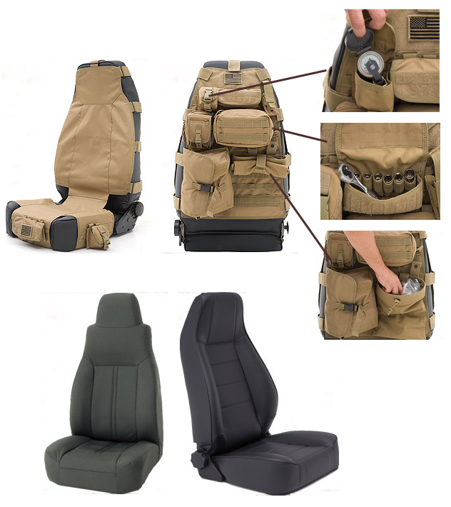

Whether you're looking to replace or upgrade your existing Jeep seats, Smittybilt offers a vast array of high quality options in a variety of colors and styles. From the Standard Bucket seats, to Factory Replacements, to TJ-Style, the the Contour Sport seat, all Smittybilt Front Seats for Jeep utilize a tubular frame with ergonomic comfort and long-lasting trim covers.
Only Smittybilt could come up with a product as innovative as the new G.E.A.R. Seat Covers. Combining plush comfort with an efficient design, Smittybilt takes the idea of premium seat covers to a whole new level.
Each G.E.A.R. seat cover comes fully-equipped with pockets and storage compartments to help you store personal items and save space, while also providing a comfortable and durable seat cover solution.
For more information go to www.smittybilt.com
